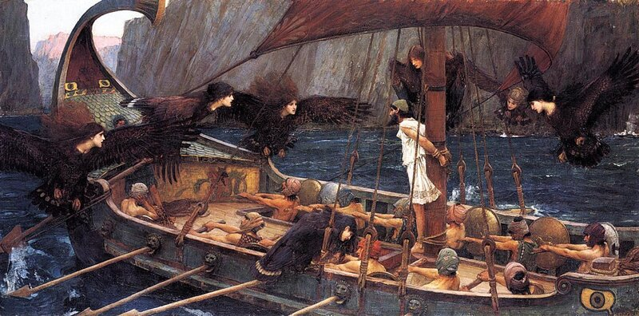
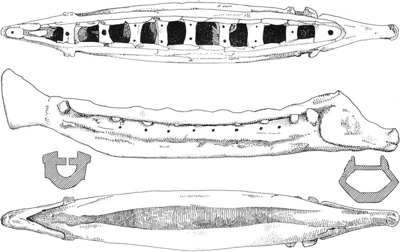
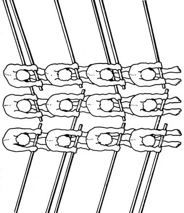

Здоровый мозг даже решительно отказывается понимать эти абсурды.
Б.М. Маркевич. Марина из Алого Рога

В статье, опубликованной в The International Journal of Nautical Archaeology (36.2, 2007) Alec Tilley следующим образом находит выход из положения, в которое попали морские историки с объяснением происхождения названия hemiolia, относящегося по преимуществу к пиратским кораблям IV века до н.э:
Hemiolia вероятно имела двух гребцов на банку в средней части судна, где оно достаточно широкое, и только одного гребца на банку в носовой и кормовой части, где судно ỳже.
Эта гипотеза находит подтверждение, по мнению А. Тилли, в конструкции небольшого гребного судна, глиняная модель которого, находящаяся в музее города Кассель, Германия, была описана Арвидом Гёттлихером в 2004 г. Модель эта имеет явно выраженный таран, что позволяет относить ее к категории военных кораблей, и восемь банок для гребцов. Гёттлихер, считает, что такое судно могло быть береговым патрульным кораблем или пиратским судном. А. Тилли предположил, что в данном случае мы имеем модель hemiolia. 
Ключевым моментом для данной гипотезы явились отверстия в банках. Тилли считает, что это не может быть ничем иным, как отверстиями для съемных сидений гребцов, имеющих соответствующие штифты, препятствующие перемещению сидений во время гребли. Банки в центре судна (пять банок) имеют по два отверстия, в то время как в носу и корме (три банки) – по одному. Тилли подсчитал, что в среднем на банку приходится 15/8 гребцов, но наши древние братья видимо посчитали, что это вполне сойдет за полтора гребца, что как раз согласуется со смыслом термина hemiolia. В греческой и латинской литературе не встречается названия типа корабля, основанного на числе « ¾ » , что отвечало бы среднему числу гребцов в поперечном сечении, находящихся на одном борту данного судна. Поэтому он считает, что термин hemiolia, основанный на числе « 1 ½ » , подразумевает число гребцов во всем поперечном сечении судна, делая из этого более широкий вывод, что и в других типах кораблей, включающих в свои названия числа, заложен тот же принцип. Мы уже упоминали об этом в предыдущем посте.
Для подтверждения своей точки зрения Тилли привлек знаменитую краснофигурную вазу из Британского Музея, изображение которой мы поместили недавно. Композиция изображает Одиссея, которого товарищи привязали к мачте, чтобы он не поддался соблазняющему пению сирен, грозящему гибелью. У самих гребцов, как мы помним, уши были залеплены воском. Но не это сейчас нас будет интересовать. Мы хотим решить другую загадку: на изображении корабля только четыре гребца сидят на левом борту, в то время как через порты левого борта проходит шесть весел, плюс еще один порт в носу остается пустым. (Это греческое изображение отличается от его осовремененного варианта на картине Джона Уильяма Уотерхауса, репродукция с которой помещена в начале поста.)
В 2004 г. Британский Музей поместил схему Тилли, объясняющую кажущийся парадокс в размещения гребцов и весел на корабле Одиссея.

Наличие пустого порта объяснялось тем, что возможно баковый гребец мог грести с одного или другого борта, как диктовалось обстановкой.
Не все ученые приняли такую интерпретацию Тилли. Моррисон так вообще назвал ее абсурдом. Однако и предложенные им самим схемы оказались не лучше, представляя собой сложные комбинации гребцов с веслами разной длины и различным количеством гребцов на одном весле.
Другие известные специалисты (Casson, Murray) в принципе поддержали идею Тилли, хотя эта поддержка была достаточно сдержанной.
Однако договориться обо всех проблемах, возникающих в связи с толкованием номенклатуры античных судов, по-видимому, так и не удалось. Почему – расскажем в завершающей части главы об античном стиле гребли в следующий раз.
Страшащийся судьбы – спокоен будь!
Ведь все в руках высокого провидца.
Пусть в книге судеб слов не зачеркнуть,
Но что не суждено – тому не сбыться.
Тысяча и одна ночь.